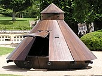
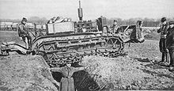
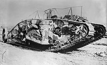

Історія танків — це історія створення та вдосконалення, використання танків. Перші зразки танків були створені в період Першої світової війни. З моменту винайдення і до сьогодення змінилися конструкція танків, а також тактика їх застосування. З часів закінчення Першої світової війни танки набули значного поширення і нині перебувають на озброєні практично всіх країн, які мають значні збройні сили й. З середини XX століття, танки застосовувалися в переважній більшості збройних конфліктів. Нині бронетанкові війська є основною ударною силою сухопутних військ практично всіх великих армій.
Передісторія танків
У Середньовіччі в польовому бою широко застосовувалися вагенбурги, каррочио, табори і гуляй-город, а при штурмі міст і замків - облогові вежі, відомі ще з античності. У Китаї і Кореї ще з давніх часів під час ведення польового бою в аналогічних цілях використовували бойові колісниці покриті «бронею» з щитів і оснащені станковими арбалетами. Аналогічно, наприкінці існування Римської імперії використовувалися колісниці зі скорпіонами і балістами.
І, якщо ще табори гуситів були озброєні лише гарматами і вели ефективний артилерійський вогонь, то пізніше розвиток артилерії зробив застосування таборів та їх аналогів безглуздим, оскільки польова артилерія, на відміну від величезних облогових бомбард, які просто не влучали у табори, легко знищувала ці малорухливі дерев'яні «танки». Тільки в Америці на «дикому заході» продовжували застосовувати подібну тактику, і тільки тому, що індіанці не мали артилерії.
Вважається, що перший танк придумав Леонардо да Вінчі, але він не отримав широкого вжитку і незабаром про нього забули. Це був дерев'яний «ящик» на колесах з бійницями для стрільби.
У 1914 році, вже в розпал боїв Першої світової війни, у головне військово-технічне управління Російської імперії надійшло відразу два проекти гусеничних броньованих машин. Перший — «Всюдихід» російського винахідника О. О. Пороховщикова.
Перша світова війна
До початку Першої світової війни самохідні броньовані військові машини вже не були новинкою. З'явившись на початку ХХ століття, бронеавтомобілі вже встигли отримати хоч і обмежене поширення в арміях Великої Британії, Франції та Німеччини. Але бронеавтомобілі того часу будувалися на базі комерційних автомобілів, мали вкрай низьку прохідність і були практично не здатні до пересування поза дорогами. В умовах переритої окопами і артилерійським вогнем фронтової смуги позиційної війни, до якої перейшов Західний фронт незабаром після початку війни, бронеавтомобілям рідко випадала можливість вступити у бій, що визначило їх суто другорядну роль на тому фронті.
Заразом, перший рік війни виразно продемонстрував кризу традиційних тактик наступу в умовах позиційної війни. Навіть тривала артилерійська підготовка виявлялася не в змозі завдати противнику важкі втрати і придушити його вогневі точки, а тим паче вибити його із займаних позицій, і піхоті доводилося вести наступ на укріплені ворожі позиції, несучи величезні втрати насамперед від кулеметного вогню. Успіхи ж, які досягалися таким чином, були невеликі і до 1915 року стало очевидно, що досягти стратегічного прориву колишніми засобами у таких умовах неможливо.
Проекти бойових машин на гусеничному ходу висувалися ще до початку війни у різних країнах, але піонером у створенні танків стала Велика Британія. Ще з 1914 року багатьма британськими інженерами і військовими висувалися різні проекти бойових машин, зокрема, з використанням тракторного шасі, проте вони зустрічали великий опір з боку військового міністерства.
Подолати його вдалося лише в 1915 році, коли під керівництвом Е. Суінтона були створені і випробувані неозброєні прототипи броньованих бойових машин на тракторному шасі. Хоча випробування пройшли успішно, військові вимагали від майбутньої машини високої прохідності, зокрема, здатності долати широкі рови і значні вертикальні перешкоди, яку тракторне шасі не забезпечувало. Для вирішення цієї проблеми, гусеничну стрічку пустили навколо корпусу, що збільшувало як довжину опорної поверхні, так і висоту зачеплення
Перший прототип нової бойової машини було закінчено у січні 1916 року і, за результатами проведених у лютому того ж року випробувань, отримав високі оцінки ряду військових, зокрема, командира британських експедиційних сил у Франції. Вже незабаром військове міністерство розмістило замовлення на виробництво першої партії зі 100 танків. Для збереження секретності нові машини вироблялися і транспортувалися під виглядом «резервуарів для води» (англ. tank), і згодом ця назва стала загальноприйнятою, поширилась у багато мов.Згідно з британською системою позначення озброєнь, машини отримали позначення «Танк, Модель 1» (англ. Tank, Mark I або Mk.I).
Перші танки представляли собою 28-тонні гусеничні машини з протикульовим бронюванням товщиною від 5 до 12 мм, які випускали у двох варіантах і розрізнялися озброєнням — кулеметним або гарматним, тому позначалися, відповідно, як «Самка» (англ. Female) і «Самець» (англ. Male). Карбюраторний двигун потужністю 105 к. с., взятий від цивільного трактора, забезпечував танку максимальну швидкість всього у 6,4 км/год. Конструкція перших танків відрізнялася крайньою недосконалістю. Умови роботи екіпажу всередині танка були на межі можливостей людського організму, частими були нещасні випадки, іноді зі смертельними наслідками. Конструкція танків також відрізнялася дуже низькою надійністю, а прохідність, незважаючи на увагу, яку приділили їй при проектуванні танка, виявилася невелика через низьку питому потужність машини і прорахунків проектувальників.
Але, незважаючи на все це, при першому застосуванні 15 вересня 1916 року в ході битви на Соммі, танки, хоч і повною мірою проявили в тому епізоді свої недоліки, зуміли домогтися значних успіхів, порівняно з наступом традиційними методами. Вони були. практично, невразливі для стрілецької зброї і мали дуже сильний психологічний вплив на німецьку піхоту. Для застосування танків в битві на Соммі була створена Важка секція Кулеметного корпусу, у 1917 р. перейменована на Танковий корпус.